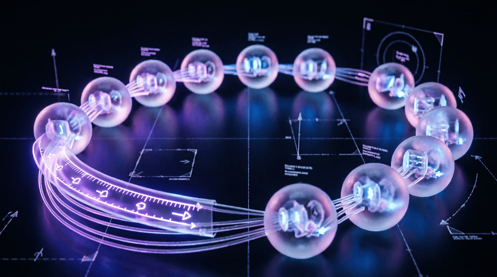

Урок 12: Блок Multi-Head Attention
ML-инженер • Блок 3: Современные тяжелые архитектуры
Одиночный слой внимания (Scaled Dot-Product Attention) усредняет информацию со всей последовательности, из-за чего сеть может фокусироваться только на одном типе связей за раз. Архитектурное решение этой проблемы — Multi-Head Attention (MHA). Мы разделяем скрытое пространство на несколько «голов», позволяя модели параллельно извлекать различные типы контекста: одна голова отслеживает грамматику, вторая — местоимения, третья — логические ассоциации.
view и permute для параллельного расчета на GPU.
Поскольку механизм внимания обрабатывает все токены одновременно, он инвариантен к их порядку в тексте (для него предложения «Кот ест мышь» и «Мышь ест кот» изначально идентичны). Чтобы вернуть информацию о порядке слов, к эмбеддингам добавляют позиционные сигналы. Современный стандарт — это Rotary Position Embeddings (RoPE) или синусоидальное кодирование, которое подмешивает тригонометрические частоты в зависимости от индекса токена.
Этот код демонстрирует низкоуровневую работу с размерностями многомерных тензоров для реализации эффективного параллельного инференса.
import torch
import torch.nn as nn
import math
class MultiHeadAttention(nn.Module):
def __init__(self, d_model, num_heads):
super().__init__()
assert d_model % num_heads == 0, "d_model должен нацело делиться на num_heads"
self.d_model = d_model # Общая размерность скрытого пространства (например, 512)
self.num_heads = num_heads # Количество голов внимания (например, 8)
self.d_k = d_model // num_heads # Размерность внутри одной головы (512 // 8 = 64)
# Линейные проекции для Queries, Keys и Values
self.w_q = nn.Linear(d_model, d_model)
self.w_k = nn.Linear(d_model, d_model)
self.w_v = nn.Linear(d_model, d_model)
# Финальная линейная проекция, объединяющая выходы всех голов
self.w_o = nn.Linear(d_model, d_model)
self.softmax = nn.Softmax(dim=-1)
def forward(self, q, k, v, mask=None):
# Входные формы: [Batch_Size, Seq_Len, D_model]
batch_size, seq_len, _ = q.size()
# Шаг 1: Проекция и разделение на головы
# Трансформируем форму из [B, S, D_model] в [B, S, H, D_k]
# Затем меняем оси местами (permute) на [B, H, S, D_k] для независимых матричных операций
queries = self.w_q(q).view(batch_size, seq_len, self.num_heads, self.d_k).permute(0, 2, 1, 3)
keys = self.w_k(k).view(batch_size, seq_len, self.num_heads, self.d_k).permute(0, 2, 1, 3)
values = self.w_v(v).view(batch_size, seq_len, self.num_heads, self.d_k).permute(0, 2, 1, 3)
# Шаг 2: Расчет Scaled Dot-Product Attention параллельно по всем головам
# Форма оценок (scores): [Batch_Size, Num_Heads, Seq_Len, Seq_Len]
scores = torch.matmul(queries, keys.transpose(-2, -1)) / math.sqrt(self.d_k)
if mask is not None:
# Изменяем размерность маски для соответствия форме scores
scores = scores.masked_fill(mask == 0, -1e9)
attention_weights = self.softmax(scores)
# Форма контекста (context): [Batch_Size, Num_Heads, Seq_Len, D_k]
context = torch.matmul(attention_weights, values)
# Шаг 3: Объединение (Concatenation) голов обратно
# Возвращаем оси к форме [Batch_Size, Seq_Len, Num_Heads, D_k]
# Метод .contiguous() гарантирует последовательное расположение тензора в памяти после перестановки осей
context = context.permute(0, 2, 1, 3).contiguous()
# Схлопываем последние две размерности обратно в D_model: [Batch_Size, Seq_Len, D_model]
context = context.view(batch_size, seq_len, self.d_model)
# Шаг 4: Финальная линейная трансформация
return self.w_o(context)Вычисление матрицы внимания имеет квадратичную сложность $O(S^2)$ по длине последовательности, что сильно бьет по памяти GPU при длинных контекстах. Для оптимизации продакшена применяют:
Напишите скрипт, замеряющий потребление памяти GPU и время работы слоя MultiHeadAttention при увеличении длины последовательности Seq_Len от 128 до 4096 токенов (с шагом по степеням двойки). Постройте мысленный график зависимости и определите, на какой длине контекста ваша система упрется в ограничение по памяти из-за квадратичной сложности алгоритма.
import torch
import time
import math
import torch.nn as nn
class MultiHeadAttention(nn.Module):
def __init__(self, d_model, num_heads):
super().__init__()
self.d_model = d_model
self.num_heads = num_heads
self.d_k = d_model // num_heads
self.w_q = nn.Linear(d_model, d_model)
self.w_k = nn.Linear(d_model, d_model)
self.w_v = nn.Linear(d_model, d_model)
self.w_o = nn.Linear(d_model, d_model)
self.softmax = nn.Softmax(dim=-1)
def forward(self, q, k, v, mask=None):
batch_size, seq_len, _ = q.size()
queries = self.w_q(q).view(batch_size, seq_len, self.num_heads, self.d_k).permute(0, 2, 1, 3)
keys = self.w_k(k).view(batch_size, seq_len, self.num_heads, self.d_k).permute(0, 2, 1, 3)
values = self.w_v(v).view(batch_size, seq_len, self.num_heads, self.d_k).permute(0, 2, 1, 3)
scores = torch.matmul(queries, keys.transpose(-2, -1)) / math.sqrt(self.d_k)
if mask is not None:
scores = scores.masked_fill(mask == 0, -1e9)
attention_weights = self.softmax(scores)
context = torch.matmul(attention_weights, values)
context = context.permute(0, 2, 1, 3).contiguous().view(batch_size, seq_len, self.d_model)
return self.w_o(context)
# --- Бенчмарк ---
if __name__ == "__main__":
d_model, heads = 512, 8
lengths = [128, 256, 512, 1024, 2048, 4096]
print(f"{'Seq_Len':<10} {'Time (ms)':<12} {'Memory (MB)':<12}")
print("-" * 34)
for seq_len in lengths:
# ВАШ КОД ЗДЕСЬ:
# 1. Создайте слой MHA и тестовые данные
# 2. Замерьте время выполнения (torch.cuda.Event или time.time)
# 3. Замерьте потребление памяти (torch.cuda.memory_allocated)
# 4. Выведите результаты в таблицу
passimport torch
import time
import math
import torch.nn as nn
class MultiHeadAttention(nn.Module):
def __init__(self, d_model, num_heads):
super().__init__()
self.d_model = d_model
self.num_heads = num_heads
self.d_k = d_model // num_heads
self.w_q = nn.Linear(d_model, d_model)
self.w_k = nn.Linear(d_model, d_model)
self.w_v = nn.Linear(d_model, d_model)
self.w_o = nn.Linear(d_model, d_model)
self.softmax = nn.Softmax(dim=-1)
def forward(self, q, k, v, mask=None):
batch_size, seq_len, _ = q.size()
queries = self.w_q(q).view(batch_size, seq_len, self.num_heads, self.d_k).permute(0, 2, 1, 3)
keys = self.w_k(k).view(batch_size, seq_len, self.num_heads, self.d_k).permute(0, 2, 1, 3)
values = self.w_v(v).view(batch_size, seq_len, self.num_heads, self.d_k).permute(0, 2, 1, 3)
scores = torch.matmul(queries, keys.transpose(-2, -1)) / math.sqrt(self.d_k)
if mask is not None:
scores = scores.masked_fill(mask == 0, -1e9)
attention_weights = self.softmax(scores)
context = torch.matmul(attention_weights, values)
context = context.permute(0, 2, 1, 3).contiguous().view(batch_size, seq_len, self.d_model)
return self.w_o(context)
if __name__ == "__main__":
if not torch.cuda.is_available():
print("GPU не доступен. Бенчмарк требует CUDA.")
exit()
d_model, heads, batch = 512, 8, 4
lengths = [128, 256, 512, 1024, 2048, 4096]
print(f"{'Seq_Len':<10} {'Time (ms)':<12} {'Memory (MB)':<12}")
print("-" * 34)
for seq_len in lengths:
mha = MultiHeadAttention(d_model, heads).cuda()
x = torch.randn(batch, seq_len, d_model, device='cuda')
# Прогрев
for _ in range(5):
_ = mha(x, x, x)
# Замер времени
torch.cuda.synchronize()
start = time.time()
for _ in range(100):
_ = mha(x, x, x)
torch.cuda.synchronize()
elapsed_ms = (time.time() - start) / 100 * 1000
# Замер памяти
mem_mb = torch.cuda.memory_allocated() / 1024 / 1024
print(f"{seq_len:<10} {elapsed_ms:<12.2f} {mem_mb:<12.2f}")
del mha, x
torch.cuda.empty_cache()Обычный Attention сначала вычисляет полную матрицу $S \times S$ (например, 4096×4096 = 16 млн значений), сохраняет её в медленной памяти GPU (HBM), а затем применяет Softmax. Это требует огромного объема памяти и множества обращений к медленной памяти.
Приложение бесплатное. Было и останется.
Если проект помог вам или вашим близким — можете поддержать разработку добровольным переводом.
❤️ Спасибо за поддержку!
Перейти в каталог
